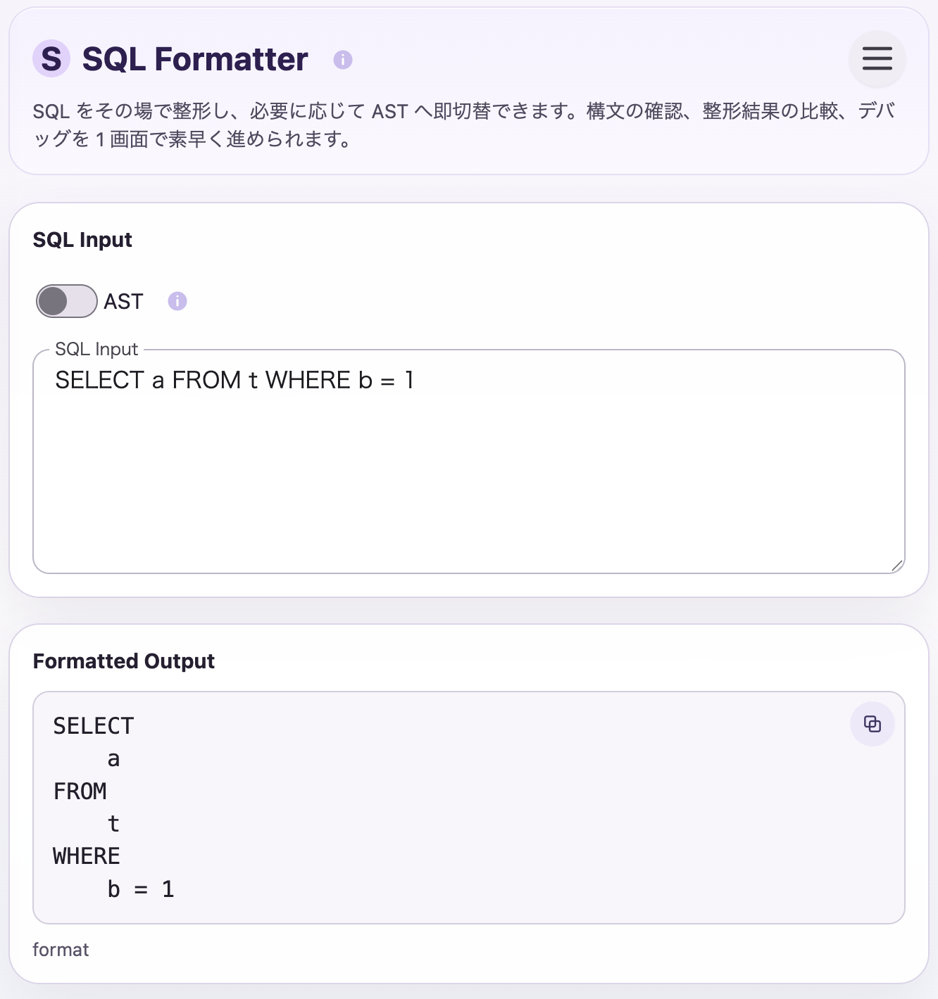

sql-formatter
English
sql-formatter is a browser-based SQL formatter and AST viewer. It runs as a single-file web app and works offline in the browser.
- Format SQL immediately in the browser.
- Useful for syntax inspection, debug, and query review.
- No installation required.
Target SQL: DML / DQL such as SELECT, INSERT, UPDATE, DELETE, and DDL such as CREATE TABLE and ALTER TABLE.
The app re-runs automatically when you edit SQL or switch AST mode.
Screenshot / スクリーンショット

日本語
sql-formatter は、ブラウザ上で動作する SQL 整形・AST 確認ツールです。 単一 HTML 配布で、ブラウザだけでオフライン動作します。
- ブラウザ上ですぐに SQL を整形できます。
- 構文確認、デバッグ、レビュー用途に使えます。
- インストール不要です。
対象SQL: SELECT / INSERT / UPDATE / DELETE などの DML / DQL、および CREATE TABLE / ALTER TABLE などの DDL。
SQL の入力変更時、および AST スイッチ切替時に自動で再実行されます。